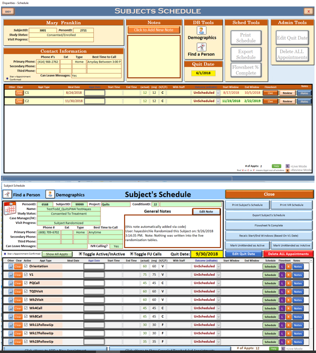
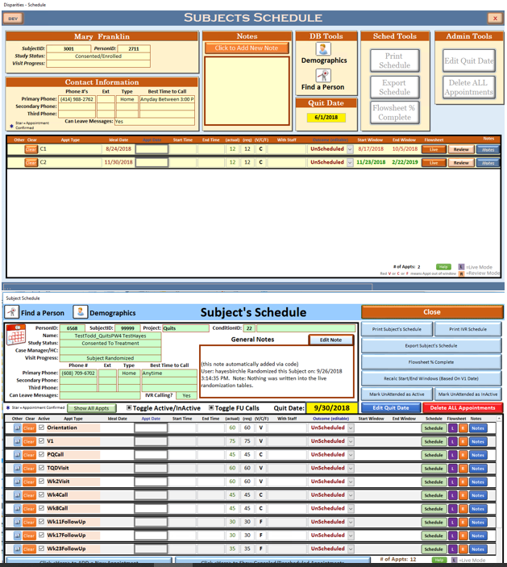

The Datanets
| Platform: | MS Access |
| Languages: | VBA, Pyhton, XML (Ribbon) |
| Data Source: | Split Access Back-End |
| Size: | Large |
| Organization: | CTRI |
| Notes: | Largest solo project |
Overview
One of the firsts tasks I was asked to perform on arrivale at CTRI was to develop an access application that could track data dictionaries for datasets associated with the center. The center runs numerous concurrent studies ranging from tracking 20-30 participants over a couple of months up to tracking thousands of participants over the series of 1-3 years. Studies could produce hundreds of raw datasets from many different sources, and the previous system of tracking via excel was getting out of hand. In addition to adding datasets, I added the ability to track the 'lineage' of datasets and variables. This allowed us to follow the progression of raw data through the cleaning process and into large analysis sets.
In my data management role it quickly became apparent that the center was running into issues with consistancy among assesments. Even within the same project an assessment with multiple time points asked the same question differently, both in terms of phrasing, and code book responses. It quickly became apparent that my application could do more to help the center.
By linking the variables in the dataset to a unique list of variables (which we called 'meta' variabels), I was able to add functionality to compare like variables against each other. This was so successful that we moved the development of Qualtrics assesments into the Datanets, and added in the ability to export the created assessments into files that could be imported directly into Qualtrics. This significantly improved consistancy, cut down on transcription errors, and sped up project development. This also turned the Datanets into a multi-user project, with project management and the Qualtrics team as added users.
All of our data cleaning and manipulation is handled through SPSS syntax. This gives us an easy to follow (and justify) trail of how our data was processed. But developing syntax can be tedious and time consuming. Given that all of the data was already being tracked in the Datanets, the next logical step was to get the datanets to automate significant aspects of the syntax development. Initially this was doen through a simple form allowing me to select variables and run different operations to generate syntax (keep statements, recodes, value and variable labels, etc). I then moved into creating SPSS syntax templates that could be manipulated in one easy step to generate the bulk of both the cleaning syntax, and the syntax necessary to generate merged analysis sets. This greatly reduced the turn around time in the data management process, getting PIs qaulity data faster.
Additional tools were added that allowed access to interface with SPSS via python scripts. These tools included validating the variables in the Datanets matched the variables in the dataset, running syntax directly from the Datanets, and importing data dictionaries directly from SPSS data files.
The datanets quickly grew into the largest solo project I have ever produced. It contains **stats** and provides tools in the following ares **tools**


All Paws On Deck Node.JS, Express, EJS, Mongo, Javascript, HTML, CSS, CS 506 (SE), First Web Dev

Disparities Access, VBA, Rework of Legacy Database, SQL Backend
 



IVR Monitoring dotnet, C#, dynamically swap backends (MSSQL) through DAL, Data Visualization, CTRI
Last FM dotnet, C#, Azure MSSQL, CS 564 - RDBMS, Group Project
Brackets Java, JavaFX, CS 400 - Data Structures
Address Book MS Access, VBA, XML, SQL Backend, Legacy Overhaul, CTRI
PRISM MS Access, VBA, Access RDBMs, First completed professional project
Additional Work Projects Some additional projects from CTRI